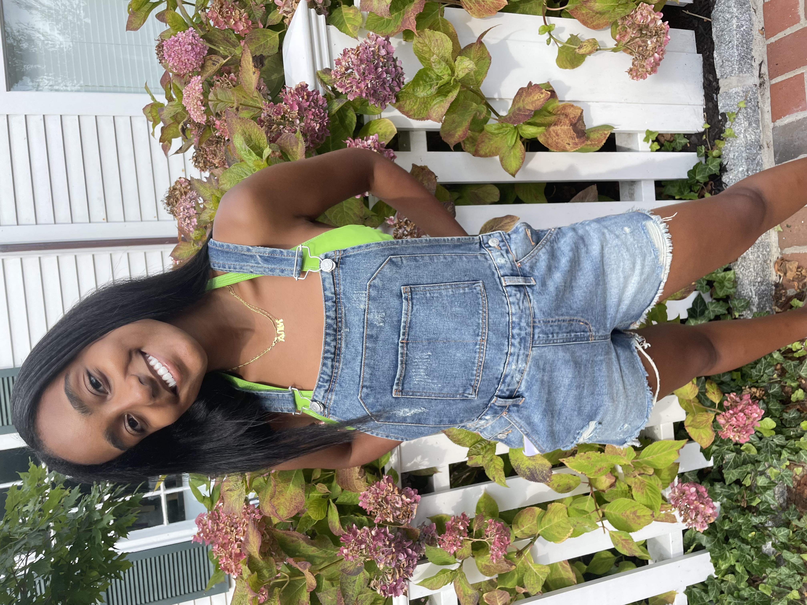

Hello, and welcome to my book blog, Iz Got Books!
Since a very young age, I've been consumed with stories. Fictional books provided me with a window into the worlds I was only able to dream about. Now, as a journalism student and book blogger, I'm able to cultivate stories in a way that brings people together. I started my book blog in March of 2020, a time where many of us felt lost and were searching for familiar comforts. By starting my blog on Instagram, I was able to connect with fellow booklovers and share the stories that impacted me. Now, by finally creating a webpage for my blog, I hope to continue to connect with people through a shared love of reading, as well as have a hub for any book-related content. Iz Got Books is about having a place for my post-read rambles, sharing book guides for different cities, and interviewing authors who are making a splash in the publishing world. But’s also about fostering a community where people can feel validated in their passion for reading as a form of comfort.